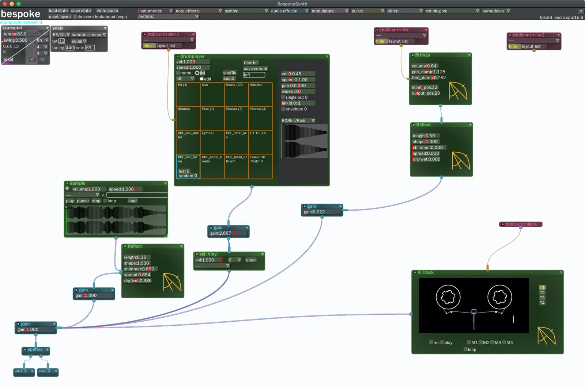
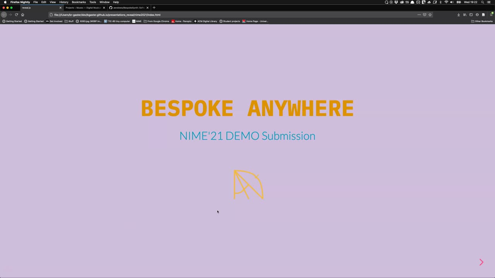
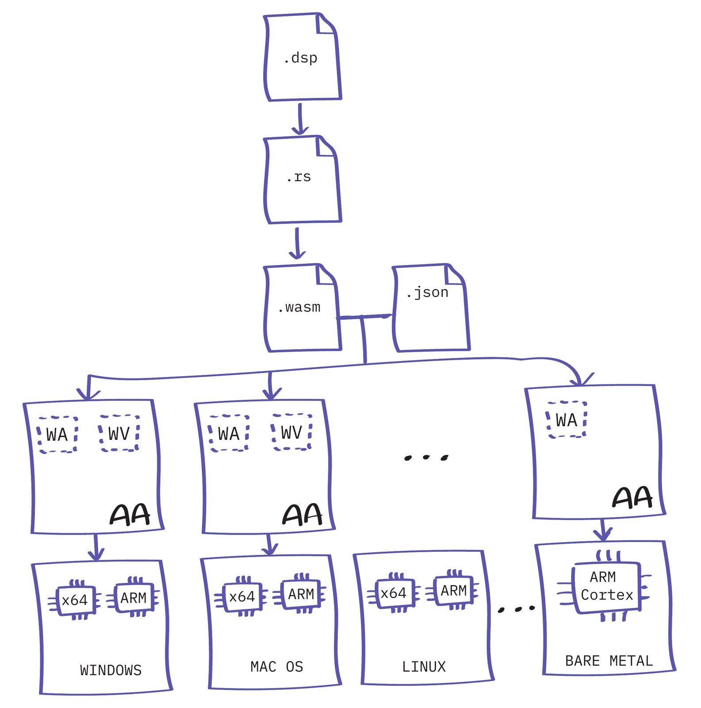
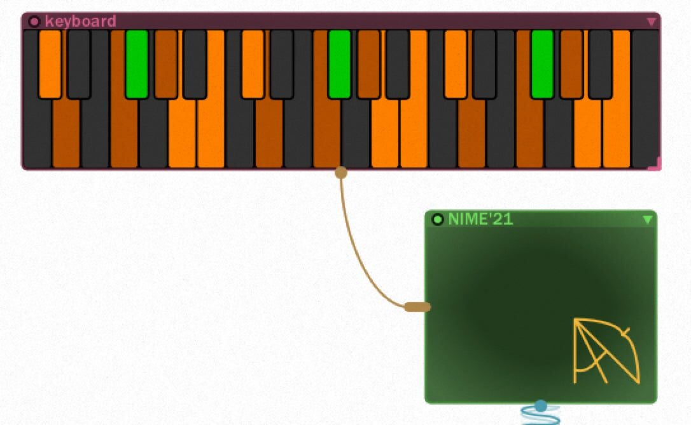
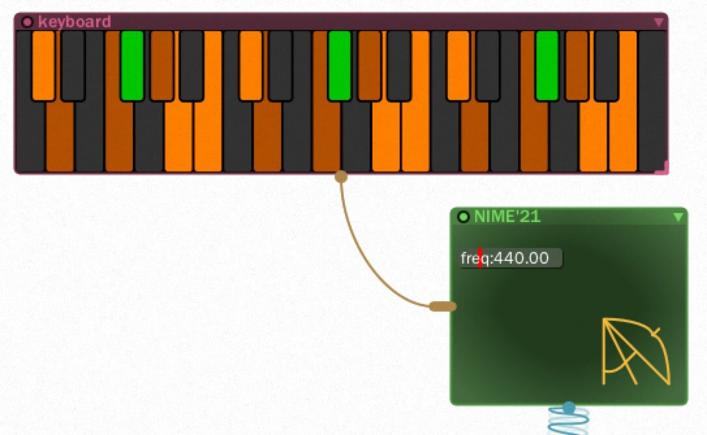

Bespoke Anywhere
Abstract
This paper reports on a project aimed to break away from the portability concerns of native DSP code between different platforms, thus freeing the instrument designer from the burden of porting new Digital Musical Instruments (DMIs) to different architectures. Bespoke Anywhere is a live modular style software DMI with an instance of the Audio Anywhere (AA) framework, that enables working with audio plugins that are compiled once and run anywhere. At the heart of Audio Anywhere is an audio engine whose Digital Signal Processing (DSP) components are written in Faust and deployed with Web Assembly (Wasm).
We demonstrate Bespoke Anywhere as a hosting application, for live performance, and music production. We focus on an instance of AA using Faust for DSP, that is statically complied to portable Wasm, and Graphical User Interfaces (GUIs) described in JSON, both of which are loaded dynamically into our modified version of Bespoke.
Author Keywords
WASM, Bespoke, plugins, native, DSP, Faust, Audio Anywhere
CCS Concepts
•Applied computing → Sound and music computing; Performing arts; •Information systems → Music retrieval;
Introduction
The ideal of compile once and run anywhere1 has been a dream in computer science for as long as it has been an area of research. From the early days of Lisp, through to Java and Python with its import ideal. However, to date these offerings, as amazing as they are, have failed to reach performance close to what system-based languages C and C++ can achieve. Outside of general purpose programming, certain Domain Specific Languages (DSL) [1] have achieved excellent performance. For example, in the domain of graphics there are many, including GLSL [2], and in the audio domain the language Faust [3] is an exemplar.
Over the last few years a new kid on the block has emerged as an interesting inflection point in the search for a compile once, run anywhere target for compiling system-based languagesfor compiling system-based languages (such as C, C++, and Rust). WebAssembly (or Wasm) is an open standard, originally developed by the four main browser vendors, specifying a portable format for executable programs, including interfaces for facilitating interactions between such programs and their host environment [4].
The web browser is an amazing platform, however, while there have been some major advances in real-time audio in the web, e.g. [5][6][7], latency limitations still exist. Moreover, Digital Audio Workstations (DAWs) and other audio software that support plugins still run outside the browser, while additionally there are many capable embedded systems, that are not suitable for a browser. In this work we explore if WebAssembly is a suitable compilation target for real-time audio for desktop OS.
Audio Anywhere (AA) [8] is a framework that explores the idea of compile once, run anywhere for audio DSP code. Audio Anywhere combines Faust, for audio DSP code, and HTML5 to enable development of modern audio synthesis and effects tools. The Faust DSP code is complied once into WebAssembly, but unlike early work, the resulting audio code is not hosted within a browser, instead it is translated on the fly to native code running within a hosting application.
Bespoke is a modular synthesis environment akin to a DAW, but with the predefined structure removed, and the routing instead left to the user. This allows Bespoke to exist in a space between structured DAWs like Ableton Live or Logic, and low-level patching environments like Pure Data or MaxMSP. This gives a user access to higher-level sound synthesis modules while making the signal chain fully visible, and allows users to intuitively create novel custom signal chains and modulate between arbitrary modules with visible connections. This can be contrasted with traditional DAWs, where the signal chain and modulation connections are typically more abstracted and implied rather than directly visual.
In this paper we utilize the 10 plus years of development for Bespoke and integrate the AA framework, with the addition of a JSON based DSL for static defining GUIs, to provide an example of a DMI that runs both native and portable plugins. Image 1, shows a screenshot of a Bespoke Anywhere in action.
To conclude this introduction below are links to a video demonstration and the source code for both Audio Anywhere and Bespoke.


Bespoke Anywhere in action.
The following video demonstrates Bespoke Anywhere and how a new module can be easier added, without recompiling for any platform:

▶Bespoke AA in action
The following audio file documents a few bars from a simple Lofi beat produced using Bespoke AA with a combination of Audio Anywhere modules, samples (for drums), and VST plugins, recorded directly into Ableton Live:
A few bars recorded live from Bespoke AA
More details on Audio Anywhere and links to the source code are available from the project website2. Additionally, Bespoke is also open source and can be found on Github3.
The remainder of this paper is structured as follows:
Section Background takes a look at related and background work;
Section Design provides insight into the design of Bespoke AA; and
Finally, Section Conclusion concludes with pointers to future work.
Background
There is a wide variety of work and technologies that are related to and has inspired this current work. This section considers a few to help provide context and plant seeds for future work, both in audio DSP and Digital Musical Instrument (DMI) design.
The history of the modern Web includes the standardization of what is now termed HTML5. Beginning with work by Mozilla, Apple, and Opera begun in the mid 2000s, which pushed the Web towards technology capable of running 3D Games, real-time audio, and more. Javascript is at the heart of today's Web technology and Just In Time (JIT) compilers such as the V8 engine, provide amazing performance, however, it is not without its drawbacks and it is often hard to predict an application's performance. To address some of the performance unknowns of JIT JavaScript compilation Alon Zakai, at Mozilla, developed Emscripten [9], a compiler for C and C++ that targeted a subset of JavaScript, called Asm.js4 , which enabled performance characteristics closer to native code.
Building on Asm.js success, Mozilla and the other popular browser developers came together to specify WebAssembly [10], a binary instruction format for a stack-based virtual machine that targets the web. WebAssembly emerged at a similar time as other innovations in web technology, in particular, Worklets5, that in combination enable low-level access to both the rendering pipeline and low-latency audio within the browser.
A wide selection of proposals for real-time audio on the web have emerged during this fruitful time for development and in particular, building on from work on the Web Audio API [11], recent proposals have introduced Native Web Audio API Plugins [12] and Faust for the Web [13]. Faust for the Web saw its compiler being extended with a new backend that specifically targeted WebAssembly for the audio DSP code. An important difference in our approach is that Audio Anywhere does not target the web, although it is easy to see that it could indeed be applied there. WebAssembly's development is tightly linked to that of the Rust programming language and there are a number of possible benefits that might be gained by utilizing Rust as an intermediate language for Faust, before compiling to WebAssembly, and the approach is investigated here. One feature that has been enabled by using Rust as an intermediate language is the ability to have Rust's LLVM compiler apply auto-vectoriazation to Faust's resulting compute loop.
The design of portable GUIs is difficult and in the development of Digital Musical Instruments often complicated by the use of tactile controls that go beyond the QWERTY keyboard and computer mouse. While C++ frameworks such as GTK and Qt have gone a long way to address early issues with GUI toolkits, they are still often limited to certain platforms and not easy to access for many programmers. The introduction of Electron6, a cross-platform toolkit for building applications with JavaScript, HTML, and CSS, showed again the promise of Web technology for application development. In particular for GUI applications that could be written in modern web technologies, and customized to the look and feel required by the application developer, not, necessarily, matching the native look and feel of the host OS. A downside of Electron is the dependency on NodeJS and Chromium. With the development of Audio Anywhere we were keen to support desktop applications with modern custom GUIs, but at the same time wanted to avoid the heavy dependencies that Electron introduces. Instead we chose to use light weight Webviews7, aiming to utilize a common HTML5 UI abstraction layer for the most widely used platforms.
Work by Gaster et al [14] on specifying musical interfaces using SVGs anotated with meta-data, played an important role in the development of the portable UIs specifed with JSON. This work originally targeted the design of physical interfaces that are combined with Faust DSP to build a hardware and software audio toolkit, with synthesizers, a sampler, effects, and sequencers. In this work we extended this toolkit to derive interface specifcations for Bespoke, from the SVG descriptions.
Design
Bespoke is built with JUCE 8 using a custom renderer, based on NanoVG9. It is implemented in C++11 and provides a framework for defining modular synths, effects, and instruments, along with the ability to script with Python. A set of predefined UI components, such as sliders, envelopes, buttons, and so on are provided for use in building new modules. A specific Bespoke module, e.g. FM synth, implements a generic interface, overriding methods, such as number of inputs, note on, process audio, etc.


Bespoke Anywhere Module Compilation.
{
"wasm": [String],
"gui": String,
"info": {
...
"inputs": int,
"outputs": int,
...
}
}AA modules consist of a DSP element, written in Faust and compiled to Web Assembly, and a GUI description, written in JSON. Image 2, captures the compilation process into a AA bundle. A bundle is JSON description of a module’s metadata, e.g. number of inputs and outputs, along with URLs for its DSP (Wasm) and GUI (JSON) code. AA supports some small extensions for Faust, mostly for handling multiple voices, and compiles to Rust, which is in turn compiled to Web Assembly. An example of single voice sine oscillator is defined as follows:
declare aavoices "1";
import("stdfaust.lib");
f = hslider("freq",440,50,2000,0.01);
phasor(freq) = (+(freq/ma.SR) ~ ma.frac);
osc(freq) = sin(phasor(freq)*2*ma.PI);
process = vgroup(
"voices",
par(n, 1, vgroup("aavoice%n", osc(f)))) :> _ ;Details of Faust is beyond the scope of this paper, but it is worth noting that UI elements can be specified directly, here, for example, a slider (hslider) is specified to control the frequency. Additionally, as the slider is named freq AA DSP compiler will automatically connect incoming note messages to "play" the oscillator, e.g. with a MIDI keyboard. To this end, compiling with the AA compiler kit will generate a resulting Wasm binary, conforming to the AA audio API, which in turn can be loaded, via a AA bundle description, directly into Bespoke Anywhere, on all platforms, with no additional work. Image 3, shows our module connected to the software keyboard within Bespoke.
Adding interface widgets is straightforward, the developer of an AA module need simply define a UI description, in JSON, and then reload the module dynamically. Adding a slider to control the frequency can be done simply by adding the following to the UI description:


AA Mono Sine Synth (no UI).


AA Mono Sine Synth (with UI).
{
"type": "float_slider",
"name": "freq",
"x": 5, "y": 18,
"w": 80, "h": 15,
"init": 440.0,
"min": 50.0,
"max": 2000.0,
"digits": 2,
"node": 0,
"index": 0
}Of note are the node and index, which connect the widget to the AA Wasm audio-graph node and parameter index. Image 4, shows our module, now with a slider, connected to the software keyboard within Bespoke.
A major drawback of the current Bespoke Anywhere UI design is that it is good for describing static interfaces, but it becomes unwieldy when programmatic control of widgets is required or when it is necessary to control a widget by the input of one or more other widgets or controls multiple parameters within the audio-graph. For example, a play button widget, when pressed might trigger a number samplers to begin playback. In the future, recent work in declarative UI design [15] may provide an interesting avenue for describing portable interfaces, as they are defined via a data driven model it is possible to define the view in a fashion similar to Bespoke Anywhere, while enabling the update to be independently described using a Wasm based API, similar to our approach for audio.
Conclusion
The early results from exploring the use of Wasm within the context of DMI design is very promising. The desktop audio application supported on Windows and MacOS demonstrates that Wasm for native platforms scales well, integrating easily with a medium size C++ source base. It additionally shows that the systems programming language Rust, used as an intermidate language, looks promising for audio runtime and plugin development.
While JSON worked fine for describing GUIs for our initial implementation, it clearly has drawbacks, in particular describing dynamic behaviour is, at best, difficult, and, at times, simply impossible. For example, custom interfaces, as those demonstrated in the 4-track tape player in Image 1 could not be directly described in our JSON DSL alone, and instead required modifications to Bespoke itself. To address this we have begun work on again using Wasm, but this time to describe GUI behaviour, with the host application providing a GUI toolkit based on a Elm style UI model [16].
Finally, an important direction of future work is to develop an embedded AA framework, with the potential of opening up portability on standalone DMIs. Early work using Daisy micro-controllers has shown this to be a promising direction.
Acknowledgments
The first author would like to acknowledge the consistent support and insight from colleagues in the Computer Science Research Centre and Creative Technology Lab. Special thanks to Nathan Renney.
Footnotes
References
- ↩Hudak, P. (1996). Building domain-specific embedded languages. ACM Comput. Surv., 28(4es), 196-es. https://doi.org/10.1145/242224.242477
- ↩Rost, R. J., Licea-Kane, B., Ginsburg, D., Kessenich, J. M., Lichtenbelt, B., Malan, H., & Weiblen, M. (2009). OpenGL shading language (3rd ed.). Addison-Wesley Professional.
- ↩Orlarey, Y., Letz, S., & Fober, D. (2009). New computational paradigms for computer music (G. Assayag, Ed.). Paris, France: Delatour.
- ↩Haas, A., Rossberg, A., Schuff, D. L., Titzer, B. L., Holman, M., Gohman, D., … Bastien, J. (2017). Bringing the web up to speed with WebAssembly. Proceedings of the 38th ACM SIGPLAN Conference on Programming Language Design and Implementation, 185–200. Barcelona, Spain: Association for Computing Machinery. https://doi.org/10.1145/3062341.3062363
- ↩Choi, H., & Berger, J. (2013). WAAX: Web Audio API eXtension. NIME’13, 4. Korea.
- ↩Roberts, C., Wakefield, G., Wright, M., & Kuchera-Morin, J. (2015). Designing Musical Instruments for the Browser. Computer Music Journal, 39(1), 27–40. https://doi.org/10.1162/COMJ_a_00283
- ↩Kleimola, J., & Campbell, O. (2018). Native Web Audio API Plugins. Proceedings of the 4th Web Audio Conference (Wac-2018).
- ↩Gaster, B., & Cole, M. (2020). Audio Anywhere with Faust. Proceedings of the 2nd International Faust Conference.
- ↩Zakai, A. (2011). Emscripten: An LLVM-to-JavaScript Compiler. Proceedings of the ACM International Conference Companion on Object Oriented Programming Systems Languages and Applications Companion, 301–312. Portland, Oregon, USA: Association for Computing Machinery. https://doi.org/10.1145/2048147.2048224
- ↩Haas, A., Rossberg, A., Schuff, D. L., Titzer, B. L., Holman, M., Gohman, D., … Bastien, J. (2017). Bringing the Web up to Speed with WebAssembly. Proceedings of the 38th ACM SIGPLAN Conference on Programming Language Design and Implementation, 185–200. Barcelona, Spain: Association for Computing Machinery. https://doi.org/10.1145/3062341.3062363
- ↩Choi, H., & Berger, J. (2013). WAAX: Web Audio API eXtension. NIME’13, 4. Korea.
- ↩Kleimola, J., & Campbell, O. (2018). Native Web Audio API Plugins. Proceedings of the 4th Web Audio Conference (WAC-2018).
- ↩Letz, S., Orlarey, Y., & Fober, D. (2018). FAUST Domain Specific Audio DSP Language Compiled to WebAssembly. Companion Proceedings of the The Web Conference 2018, 701–709. Lyon, France: International World Wide Web Conferences Steering Committee. https://doi.org/10.1145/3184558.3185970
- ↩Gaster, B. R., Renney, N., & Parraman, C. (2019). Fun with Interfaces (SVG Interfaces for Musical Expression). Proceedings of the 7th ACM SIGPLAN International Workshop on Functional Art, Music, Modeling, and Design, 25–36. Berlin, Germany: Association for Computing Machinery. https://doi.org/10.1145/3331543.3342579
- ↩Levien, R. (2019). Towards a unified theory of reactive UI. <https://raphlinus.github.io/ui/druid/2019/11/22/reactive-ui.html>;.
- ↩Czaplicki, E., & Chong, S. (2013). Asynchronous functional reactive programming for guis. Proceedings of the 34th Acm Sigplan Conference on Programming Language Design and Implementation, 411–422. New York, NY, USA: Association for Computing Machinery.